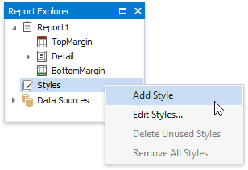
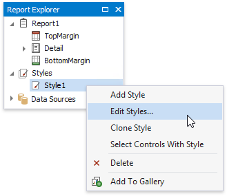
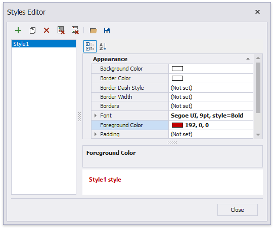
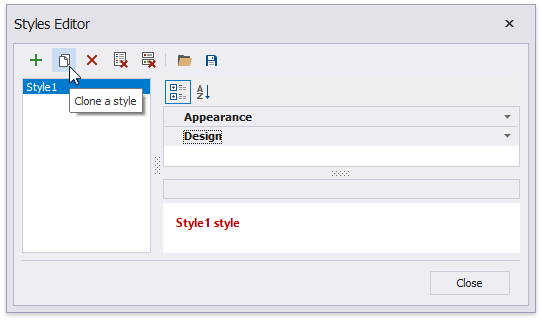
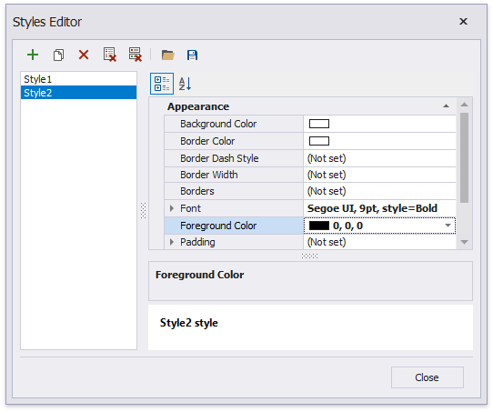
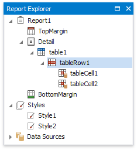
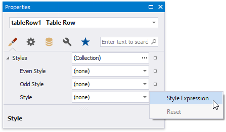
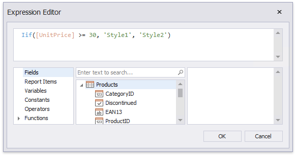
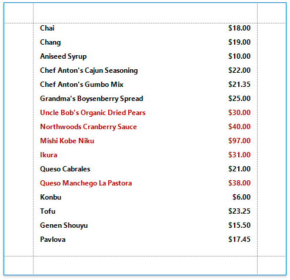

Conditionally Change a Control's Appearance
This document describes how to change a report control's appearance based on a specific condition.
Switch to the Report Explorer and right-click the Styles category to create a new visual style.

Right-click the created style and select Edit Styles.

In the invoked Styles Editor, customize the created style's appearance settings.

Create another style by cloning the existing one.

Customize the new style's appearance settings and close the editor.

Back in the Report Explorer, select a report element to which you wish to assign the created styles.

Open the Property Grid's Appearance tab, click the Style property's marker and select Style Expression in the context menu.

In the invoked Expression Editor, specify the required condition for switching between the created styles.

Switch to Print Preview to view the resulting report.
